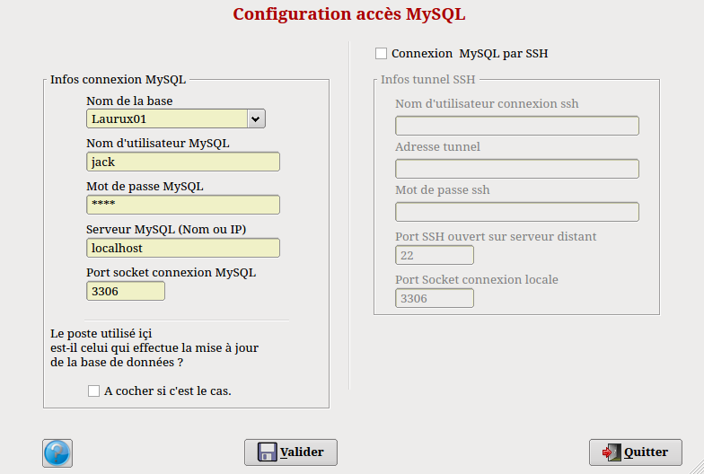

Saissez le
nom d’utilisateur MySQL
ainsi que le mot de passe tels que vous les avez crées sous MySQL.
Saissez l’adresse
du serveur ainsi que
le port. Si vous n’étes pas sûr de ces données,
laissez donc ce qui est proposé par défaut. Ne remplissez pas les zones
SSH tout de suite. Cela se fera ultérieurement par le programme de
connexion de base.
Dans
le cas d'une utilisation multi-utilisateurs, il faudra
définir le poste sur lequel se feront les mises à jour de la base et
activer sur ce dernier le bouton "A cocher si c'est le cas". En
monoposte ce bouton devra être toujours être coché.
Cliquez sur le
bouton "Valider". Si tout est
correctement parametré sous MySQL, la base de démarrage nommée Laurux01 sera
créée et restaurée. Un message vous avertira du succès de
l’opération. En cas de souci vérifiez les droits, sous
MySQL, de l’utilisateur qui doit fonctionner par défaut avec
Laurux.
Commencez par aller dans la table des
sociétés afin de rentrer vos données personnelles puis allez dans les
paramètres et adaptez les dates des périodes à votre convenance.
Ensuite allez dans les préférences afin d'adapter votre environnement
de travail à votre convenance ou vos besoins.
Voilà,
à ce stade Laurux est opérationnel et vous pouvez commencer votre
comptabilité et votre facturation.
NB: Si vous
arrivez sans arret sur le menu
de configuration en lancant Laurux, essayer de supprimer le fichier caché ~/.config/gambas3/laurux3.conf
puis relancez
Laurux. Vérifiez que le répertoire Laurux3 soit bien situé sous votre répertoire personnel.
Note sur l'utilisation de QTconfig.
Laurux3 utilise la bibliothèque graphique QT. Pour
améliorer l'apparence de Laurux3, il est nécessaire de procéder à
quelques réglages de QT.
Comment faire ?
1- Installer Qt4-qtconfig à l'aide d'un gestionnaire de paquets tel que Synaptic.
2- Aller dans les préférences et lancer le programme "Paramètres QT4"
3- Dans la zone Gui-style, séléctionner le style "Plastique".
4- Allez dans le "Tune palette" et mettez les couleurs des Tooltypebase et Tooltypetext selon votre goût.
5- Sortir et sauvegarder.
NB : La résolution optimale est de 1280*1024. Avec des résolutions
d'écrans inférieures il peut y avoir des problèmes d'affichage, bien qu'on puisse jouer avec les tailles et les résolutions des polices systèmes utilisées.
----------------------------------------------------------------------------------------------------------------------
Retour
en haut de la
page